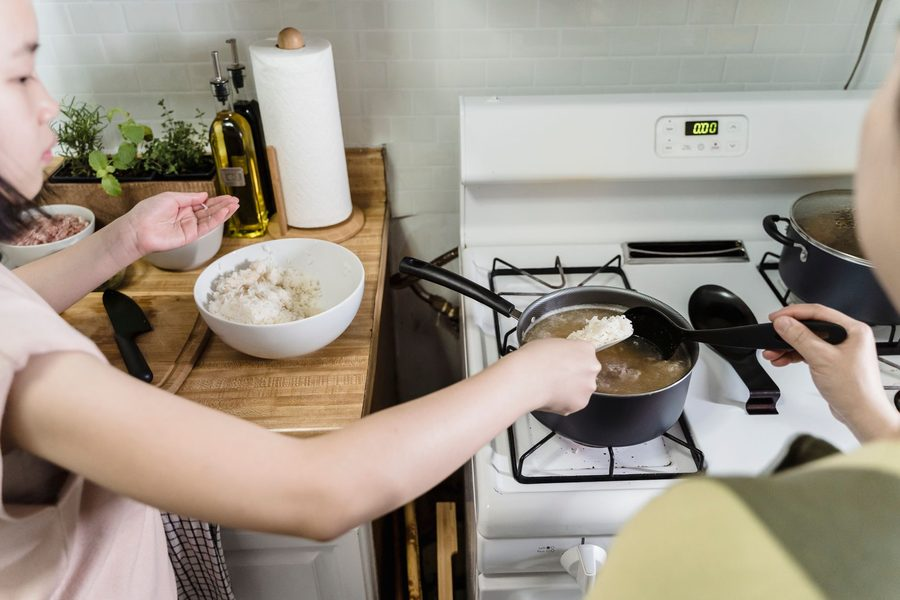

Arroz soltinho sem grudar: a proporção 1:2 que funciona sempre
A proporção 1 xícara de arroz para 2 de água, o refogado de 90 segundos e o motivo de mexer só uma vez.

Toda casa tem alguém que "não sabe fazer arroz". Na maioria das vezes o problema não é falta de jeito — é falta de proporção. O arroz empapa, gruda no fundo ou vira uma massa quando a quantidade de água está errada, quando ele fica mexendo demais durante o cozimento, ou quando o refogado inicial é longo demais e queima o grão por fora antes de cozinhar por dentro. A boa notícia é que existe uma proporção fixa que funciona sempre, independente da quantidade que você está fazendo, e ela resolve sozinha metade dos problemas.
A proporção que nunca falha: 1 xícara de arroz para 2 de água
Para arroz branco comum, a regra é simples e não muda: 1 medida de arroz para 2 medidas de água, seja em xícara, caneca ou concha — o que importa é usar a mesma medida para os dois. Essa proporção garante que toda a água seja absorvida no tempo certo, sem sobrar líquido que deixa o arroz mole, e sem faltar água, que deixa o fundo da panela queimado antes do grão de cima cozinhar.
A tabela abaixo mostra como essa proporção se comporta em quantidades diferentes, incluindo o tempo de fervo depois que a água entra em ebulição:
| Arroz (xícaras) | Água (xícaras) | Tempo de fervo com panela tampada | Rende |
|---|---|---|---|
| 1 | 2 | 13-15 min | 2-3 porções |
| 2 | 4 | 15-17 min | 4-5 porções |
| 3 | 6 | 17-18 min | 6-7 porções |
| 4 | 8 | 18-20 min | 8-9 porções |
Vale notar que arroz integral pede outra lógica (mais água, mais tempo) — esse guia é focado no arroz branco tipo agulhinha, o mais comum na mesa brasileira. Se você organiza a semana em blocos, dá pra render essa tabela em mais de um dia: no guia de marmita de cinco dias mostramos como cozinhar arroz uma vez e distribuir sem ele ressecar ou grudar depois de esquentado.
Temperatura da água: fria no início, não fervente
Um detalhe que muita gente ignora: a água entra fria (ou em temperatura ambiente), junto com o arroz já refogado, e só depois vai ao fogo para ferver. Colocar água já fervendo por cima do arroz recém-refogado choca a temperatura do óleo e faz o grão começar a cozinhar de fora para dentro de forma desigual — parte gruda no fundo enquanto o miolo ainda está duro.
A sequência correta de temperatura é:
- Óleo (ou azeite) quente na panela, ainda sem o arroz.
- Arroz entra cru e refoga no óleo quente.
- Água fria (ou à temperatura ambiente) entra de uma vez, cobrindo o arroz já refogado.
- Só depois disso o fogo sobe até ferver.
O refogado de 60 a 90 segundos que muda tudo
Antes da água entrar, o arroz cru precisa passar de 60 a 90 segundos no óleo quente, mexendo sem parar, até os grãos ficarem translúcidos nas bordas e branco-opacos no centro. Esse passo tem uma função técnica específica: o calor seco sela levemente a casca externa do grão, o que reduz a quantidade de amido que se solta na água durante o cozimento. Menos amido solto na água significa menos "cola" entre os grãos — e é exatamente essa cola que faz o arroz grudar em blocos.
Refogar de menos (10-20 segundos) não sela nada e o arroz solta amido igual se fosse direto pra água. Refogar de mais (acima de 2 minutos) começa a tostar o grão por fora, deixando pontos escuros e um sabor amargo que se espalha pra toda a panela.
O refogado não é sobre dourar o arroz — é sobre selar o grão por fora antes de encontrar a água. Passou de 90 segundos, já é queima, não refogado.
O erro mais comum: mexer demais durante o cozimento
Depois que a água ferve e a panela é tampada com fogo baixo, o arroz deve ficar intocado até o fim do tempo de cozimento. Mexer o arroz enquanto ele ainda está em processo de absorver a água é o erro que mais aparece na cozinha de quem reclama de arroz empapado — e o motivo é mecânico, não de sabor.
Cada grão de arroz cozido tem uma casca externa relativamente frágil enquanto ainda está mole e quente. Toda vez que a colher passa por dentro da panela nesse momento, ela raspa e rompe uma parte dos grãos que já cozinharam na superfície. Grão rompido libera amido direto na água que ainda está sendo absorvida pelos grãos vizinhos — e esse amido extra é o que transforma "arroz cozido no ponto" em "arroz empapado e colado". Quanto mais vezes a colher entra, mais grão se rompe, mais amido solta, mais a massa vira uma coisa só.
Quando é permitido mexer
- Uma vez, no início: só para distribuir o arroz na água de forma uniforme, antes de tampar.
- Nenhuma vez durante o fervo: tampa fechada, fogo baixo, sem espiar nem mexer.
- Uma vez no final, com garfo: depois de apagar o fogo e esperar 5 minutos com a panela ainda tampada, solte os grãos com um garfo (não colher) fazendo movimento de baixo para cima, sem esmagar.
Usar garfo em vez de colher no final também ajuda: o garfo separa os grãos ao invés de empurrar e comprimir, que é o que a colher faz.
Passo a passo completo
- Esquente 1 colher de óleo em fogo médio.
- Adicione o arroz cru e refogue por 60-90 segundos, mexendo sem parar.
- Acrescente a água fria na proporção 1:2, com sal a gosto.
- Misture uma única vez para distribuir e tampe a panela.
- Deixe ferver em fogo alto até reduzir a água na superfície, depois abaixe o fogo ao mínimo.
- Não abra a tampa nem mexa até o tempo da tabela terminar.
- Apague o fogo, deixe descansar 5 minutos tampado.
- Solte os grãos com garfo antes de servir.
Se a proporção de água e o momento de colocar o sal ainda geram dúvida em outras receitas da casa, o guia sal: quando colocar em cada preparo explica por que a ordem do sal muda o resultado também em outros pratos, não só no arroz.
E se sobrar arroz?
Arroz feito com essa proporção guarda melhor porque não tem excesso de amido solto — ele esfria em grãos separados em vez de virar um bloco compacto. Ainda assim, a forma de guardar interfere na textura de quando for esquentar de novo; isso está detalhado no guia de congelamento correto de sobras. E se a rotina da semana é o problema, não a técnica, vale conferir como distribuir o arroz cozido no planejamento de marmita de cinco dias sem ele perder textura até quinta-feira.
Quem prefere não fazer essa conta de proporção toda vez que cozinha pode deixar a memória de quantidades por conta do app Recheio, que guarda a proporção certa pra cada quantidade de arroz e lembra o tempo de fervo direto na lista de compras da semana.
Arroz soltinho não depende de sorte nem de marca de arroz — depende de três decisões simples: respeitar a proporção 1:2 de água, refogar por não mais que 90 segundos antes da água entrar, e resistir à vontade de mexer enquanto ele cozinha. Corrija esses três pontos e o resultado se repete todas as vezes, com qualquer arroz branco comum que você já tem no armário.